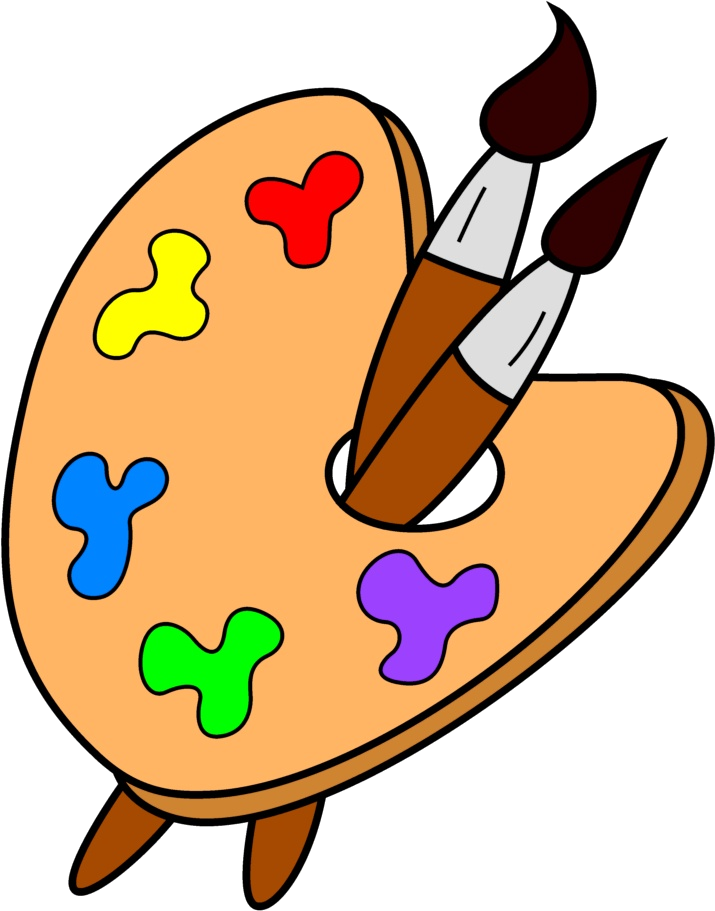

| 1 2 3 4 5 6 7 8 9 10 11 12 13 14 15 16 17 18 19 20 21 22 23 24 25 26 27 28 29 30 31 32 33 34 35 36 37 38 39 40 41 42 43 44 45 46 47 48 49 50 51 52 53 54 55 56 57 58 59 60 61 62 63 64 65 66 67 68 69 70 71 72 73 74 75 76 77 78 79 80 81 82 83 84 85 86 87 88 89 90 91 92 93 94 95 96 97 98 99 100 101 102 103 104 |
| 11:16 | DONE |  Some Real Life stuff |
| 7:56 | JCR6 |  This parse out has not yet been tested, but it'll have to be correct.... (I cannot test it yet, as everything happens under the hood). |
| 7:40 | JCR6 | For NJCR I'm now writing some stuff that should parse things out some more |
| 0:33 | BACKUP |  I did archive it... You never know when you may need it, but at least it's no longer in the way |
| 0:32 | REMOVED |  Old test crap.... A cleanup every now and then is needed, right! |
| 0:30 | STATUS |  That all appears to be in order now |
| 0:25 | GITHUB |   And cloned it to my Windows PC, so I got a fresh template ready for usage.... Cool! |
| 0:25 | GITHUB | Pushed the template to Github |
| 0:23 | FAILURE |  Dang! Good thing I replaced that outdated machine, but it was good for something! |
| 0:23 | VISUALSTUDIO |  gtk# template created on my old mac |
| - = 22 Jul 2019 = - |
| 23:57 | TODO |  I'll also have to get myself to see if setting the project VOID up is gonna be easier with GTK+ in stead of WPF.... Although WPF is quicker to set something up in general it has shown to be awful for really serious projects.... The point is that my current Visual Studio doesn't have a ready to go GTK# project, but by switching to Mac, I can solve that issue, so here goes... |
| 23:54 | NIL |  I've set up 2 empty scripts in order to get into the Field Script.... Once that's done, the actual work on the game can really take shape.... |
| 23:24 | SASKIA |  A script has been written in SASKIA to make sure all scenario will appear properly, and that the game will eventually chain to Irravonia's prologue |
| 22:50 | CONFIRMED |  Fix succesful |
| 22:49 | JCR6 | Repkaced Dutch Scenario |
| 22:49 | JCR6 | Repacked English Scenario |
| 22:48 | FIXED |  The Dutch Start Game scenario should be fixed now |
| 22:46 | FIXED | The English start game scenario should be fixed now |
| 22:40 | FIXED | The bug causing this has been fixed |
| 22:34 | INVESTIGATION |  But I think I know why... |
| 22:33 | COCKROACH |  NO EFFECT! |
| 22:23 | VISUALSTUDIO | I've modified the scenario transfer tool a bit... Hopefully this will set a few things straight |
| 21:58 | NOTE |  (this was a complaint I got from Dark Bloodbane, as well... Problem was that the way the original game was written in didn't allow me to get the pictures in anyway... Well, not in a DESIRABLE way, that is) |
| 21:57 | LINK |  I did at least link the proper pictures to the textboxes for when the names of the characters are still unknown.... |
| 21:54 | BUG |  Crap! Long scenarios bug between one and two digits.... I can now manually fix that, but for other scenarios I need to properly take care of this! |
| 21:51 | POWERSHELL |  And a quick script will allow me to get things up-to-date quicky |
| 21:50 | SCENARIO |  It was quite some searching, but I found the original game start scenario |
| 21:50 | SITE |  Added tag SCENARIO |
| 21:29 | FAILURE | My console went haywire |
| 21:24 | BACKUP | And I had to do some extra configurationas well... (Thanks to the folders I needed for Kthura and TeddyBear). |
| 21:24 | BACKUP | running |
| 20:58 | FIXED |  Well I fixed that! |
| 20:58 | HUH |  For some reason the code to do this properly disappeared.... completely! |
| 20:50 | BUG | The scenario language converter appears allergic to the fact that Irravonia's prologue start script contain tags only containing one letter... |
| 20:38 | DONE | I've checked the scenario file, but it appears all it appears is the pre-boss scenario in that dungeon, but not the scenario of the start of the game... |
| 20:06 | KTHURA |  Luckily Kthura comes with a handy "hack" tool... Good thing I planned ahead :P |
| 20:05 | TODO | I guess I need a delete function in Kthura, too! |
| 19:58 | STATUS | Well, long story short I still got loads to do! |
| 19:58 | TODO | a BoxText routine |
| 19:58 | TODO | a field script |
| 19:58 | TODO | I need to script out a flow manager |
| 19:58 | TODO | And the scenario has not yet been taken care of |
| 19:57 | TODO | I need to make sure the music is properly linked... for starters |
| 19:56 | STATUS | This means that as far as the artwork is concerned we are ready to start.... But this is not yet fully taken care of. |
| 19:55 | MAP |  And been placed in the map |
| 19:54 | ART | The main heroes have been succesfully transferred |
| 19:40 | COSMETIC |  This is only a cosmetic issue and it only affects when you see in building. The compression itself is okay, and JCR6 itself shows that |
| 19:40 | BUG | It appears the builder shows incorrect information on compression ratios when merging in from other JCR6 files.... It shows the ratio for the old file and not the new.... This should be an easy fix, but it was also easy to miss |
| 19:10 | MAP | Exit point put in |
| 17:33 | STATUS | Mesa taking break now! Mesa need to! RIGHT NOW! |
| 17:33 | ENHANCEMENT |  Taken care of the alpha issue in Kthura... Especially in Kthura this issue was a bit "lethal" |
| 17:25 | STATUS | one of the next things to do now will be to import the character actor files.... These use (unfortunately) BlitzMax style animation, but since I have a conversion tool in BlitzMax I can handle this, whoohoo! |
| 17:18 | STATUS | Right! Now, at least I got something to work with now... Hopefully I can get stuff fixed later on, but for now this will have to do! |
| 16:58 | MAP | And the prison cell has been set up entirely |
| 16:54 | ART | Diagonal walls for the prison added.... Something I didn't think of in the original game... At least not at this point, so that can do a littlebit extra |
| 16:51 | BLITZMAX | I did have to re-compile this program for Windows, but hey, it did still work, and THAT saves me a lot of issues. |
| 16:51 | SITE |  Added tag BLITZMAX |
| 16:39 | STATUS | Now I'm looking for a quick tool of mine that I may need now... |
| 16:33 | POWERSHELL | Running Kthura Build Script |
| 16:32 | ENHANCEMENT | Fonts will henceforth be ignored.... If they are really needed within a Kthura Map, I can always ALIAS them or something cheesy like that. |
| 16:23 | UNDESIREABLE |  But the fonts will make me have to scroll down more than I want to, so there's some work to be done on that department |
| 16:22 | MAP | Two walls of Zoraman Prison have erected |
| 16:22 | SITE | Added tag MAP |
| 16:14 | BUG | And I also need to find out why textures aren't listed |
| 16:12 | BUG | Tagging stuff is not operating so well in Kthura |
| 16:07 | FIXED | Right.... I guess there was no issue here in the original Kthura |
| 16:01 | COCKROACH | There is still a lot to be done as Kthura is now refusing to work properly as well! |
| 15:58 | CONFIRMED | The project builder appears to pick this all up |
| 15:56 | POWERSHELL | And I've also written a script that will be helpful in getting Kthura maps edited quickly |
| 15:55 | POWERSHELL | I've run the script that will rebuild Kthura |
| 15:53 | FIXED | I appear to have fixed all this |
| 15:38 | HUH | Project Data in Kthura is "null"???? |
| 15:03 | BUG | |
| 15:03 | FIXED | for the short run |
| 14:58 | BUG | It only doesn't want to work |
| 14:58 | KTHURA | A project file for Dyrt has been created |
| 14:09 | DONE | My weekly shopping |
| 13:09 | STATUS | Well, after I've taken a break, I'll see what I can do with the game. I've decided (at least for the short term) not to worry about the TeddyBear cockroach for now, and to focus on things that matter more now. For this reason the prison dungeon shall be replaced with a new dungeon set up in Kthura also, and maybe that's better on the longer run. |
| 11:14 | NOTE | Actually adding stuff comes later |
| 11:14 | JCR6 | Help screens for NJCR adding done |
| 11:13 | JCR6 |  NJCR has info about qu |
| 8:57 | NOTE | Before I really decide, I'll first take a look at NJCR... I've decided to put some work into that before any Dyrt session for the time being on a daily basis... |
| 8:45 | NOTE | Now this may actually have the advantage that I can make the game give some new twists and that I can take advantages of Kthura, so for the result this may be the better run... It will only bring me tons of extra work.... (urgh!) |
| 8:44 | INVESTIGATION | Nearly all debug data I can produce rules out this should be possible and yet it happens... If I cannot find the course of this, I'm afraid I'll have no other choice but to redesign the entire game with Kthura... |
| - = 21 Jul 2019 = - |
| 23:19 | COCKROACH | For some reason TeddyBear INSISTS on having all layers set to BC even though the map files themselves say differently. I've now examined the transferred file, and there the issue is one again CONFIRMED... WTF is going on here? |
| 23:02 | INVESTIGATION | The positioning of the textures implies that the setting would be BR... (draw from bottom-right of the texture). The setting however is TL (draw from top-left of the texture)... Hex viewers confirm this... Why then does the wrong rednering take place? |
| 19:09 | CONFIRMED | It was just the debug mode that was in the way, although it's not exactly "fluent" either.... |
| 19:07 | UPDATED |  Version numbers |
| 19:05 | BUG | And the positioning is not correct, which affects larger items |
| 19:04 | UNDESIREABLE | The editor runs SLOW, though.... I must sort out if it's just the debug mode or too many items being rendered, as the latter could be a serious issue.... |
| 19:04 | SITE | Added tag UNDESIREABLE |
| 19:04 | FIXED | Directory issue has also been fixed... |
| 18:24 | FIXED | The index numbers of texture and zone name definitions was not saved.... This caused at least a lot of trouble... Not everything is fine now, but at least a part of the problem as been fixed... |
| 17:48 | ANALYSIS |  The Texture folders are properly read by JCR6, so at least misconfiguration could not be the "evil" here... |
| 17:48 | SITE | Added tag ANALYSIS |
| 17:42 | INVESTIGATION | Things are getting odd..... |
| 17:36 | INVESTIGATION | The large number of "IndexOutOfRange" exceptions in the debug log, worries me.... However nothing more is shown than that, and thus the informattion is completely useless! |
| 17:35 | BUG | It is however clear that the textures are NOT loaded properly, and I wonder why |
| 17:34 | FIXED | I can at least confirm the objects are properly loaded... Some in-game data I found in the map objects do confirm this even more, as that could never be generated so well, if this wasn't loaded properly |
| 17:32 | DONE | I've added support for these drivers, and that should solve this issue in the process |
| 17:31 | SOLVED |  From the moment I noticed that a JCR entry could not be read, I already suspected the lack of a zlib driver to be the "evil" here. |
| 17:26 | INVESTIGATION | It goes wrong when the objects are being loaded.... Let's try to sort this out, shall we? |
| 17:11 | BUG | TeddyBear crashes when I try to load the level though.... The error indicates a callout to a null value... I'm afraid though that it won't be possible to pinpoint that null value without opening TeddyBear in VisualStudio |
| 16:54 | CONFIRMED | The converted map did however appear in the map list of TeddyBear, so at is at least right! |
| 16:53 | TEDDYBEAR |  I've set up a project, however I used the wizard, and as thus I need to set a few things properly in order, before I can actually get to work! |
| 16:05 | STATUS |  I should now set up a proper project file for TeddyBear so I can manually modify the map files. This is needed for serveral reasons. First of all, it is not yet set the enemy table will be the same as in the original version, and second the music needs to be relinked |
| 16:02 | VISUALSTUDIO | Skeletons have been set up for the C# CLI tool for JCR6, however this project does not have priority yet! |
| 10:36 | JCR6 | Re-aliassing again (very irritating as for that I need to rebuild that entire JCR6 file .... again) |
| 10:36 | CONFIRMED | I see what I wanted to see |
| 10:32 | NOTE | I don't need to run the game for this to see if this is right... Just checking the data generated by my tools will do |
| 10:32 | BUBBLE |  Made a test building |
| 10:30 | STATUS | As the GO JCR CLI tools are too slow, I'll try to rebuild this later! |
| 10:30 | FAILURE | Music aliassing failed |
| 10:24 | FIXED | Old "Defs" were still used.... That has been fixed |
| 10:17 | STUPIDITY |  And I should have known too! |
| 10:17 | BUG | Crap.... That explains why stuff didn't go the way it should and why it takes so much time.... |
| 10:11 | RESULT |  Things that pop up act very very odd.... |
| 10:11 | SITE | Added tag RESULT |
| 10:11 | TEST |  Testing |
| 9:31 | NOTE | The idea that is going on with me is to rewrite the CLI tools for JCR6 to C#. The main reason is, Go is TOO SLOW... Particularly when packing large files this is becoming more and more of an issue. Even though Go compiles to machine language where C# uses a JIT compiler C# appears to outrank Go on nearly all fronts, which is just sad at best! |
| 9:12 | MUSIC |  Approved and aliased for quick access from maps |
| 9:07 | MUSIC | Checking the sound quality of "Prisoner of War" by Widzy, as that will be the background music for the prison in which the game starts |
| 0:03 | STATUS | Calling it a day! |
| 0:02 | DONE | The texture extractor works, so that is one issue less to worry about |
| - = 20 Jul 2019 = - |
| 23:55 | JUDGMENT |  So far the results look good |
| 23:55 | POWERSHELL | I ran the bubble builder script to see what would happen |
| 23:52 | CHECKED |  What I see is what I wanted to see |
| 23:50 | NOTE | It does not yet extract itself... This way I can debug the name of the target... If files are actually being written and wrong, it can be quite hard to repair the damages caused. |
| 23:50 | VISUALSTUDIO | My tool can detect if the target texture exists and announce extracting prior to it actually being done. |
| 23:39 | JUDGMENT | As far as I can see, all's well! |
| 23:39 | STATUS |  All the transfer tool can do now is configure itself, as far as I now can judge that works.... |
| 23:35 | NOTE | Since some authors went for multiple license types I need to make sure that authors are sorted in the target as well |
| 23:32 | NOTE | Note to self.... Prefix all textures with "GFX/Textures/" when transferring! |
| 23:20 | TECHNO |  This will now be more work, but don't forget how many maps the original game actually has... If I need to do this all one by one MANUALLY, this would take an eternity, so that's where the computer is better than humans sometimes.... |
| 23:19 | VISUALSTUDIO | I've set up a little analyser to the 'defs' reader.... This is where all the textures are being determined, and since those are definitely important in the transfer, I'll make my transfer tool automatically extract them (if needed) into this new project dir.... |
| 22:44 | STUDY |  Some ways I set up Teddybear |
| 22:44 | SITE | Added tag STUDY |
| 22:34 | DONE | The map names can be listed out for a more adequate overview of things. |
| 20:10 | FIXED | And some fixes to the project's xml code |
| 20:10 | STUPIDITY | I gotta take better care of what I type here |
| 20:10 | VISUALSTUDIO | A project that will have to help me on this has been created |
| 19:57 | STUPIDITY | What doesn't help is that I neglected to tag the fist chapter maps properly back then, for which I now get the "bill".... |
| 19:52 | DONE | I've been taking a look on what the best appraoch can be on transferring maps from one game to the other... Of course the course of action will be to write some transfer tools that must also ensure to me that all stuff is properly taken over and that I can easily go for rebuilding, however that is easier said than done, and it will also be a kind of challenge to see what maps are suitable and what maps are not, and that ain't gonna be easy as the FrameWork the original game is written is has been taken out of use ages ago. |
| 19:46 | STATUS | Well today I visted Madurodam... I too deserve some relaxation too, don't I? |
| - = 19 Jul 2019 = - |
| 22:59 | FIXED | An auto fixer takes care of that now, though.... |
| 22:58 | CONFIRMED | And the files appear to be properly converted although with pictures there are some issues |
| 22:56 | CONFIG |  ScenLang has at least been configured to work with all this |
| 22:56 | FAILURE | Microsoft's logic, don't try to udnerstand! |
| 22:56 | VISUALSTUDIO | I've set the scenario editor to work in .NET 4.6 (for some reason my new Windows computer does not accept .NET 4.7 while THIS IS PRESENT AND INSTALLED). |
| 17:19 | STATUS | First a break |
| 17:10 | TODO | Still I must configure my scenario editor... I do know that loads of typos and grammar errors slipped past my notice in the original game, and I want them fixed in the new game (I do not have the illusion I'll catch them all, though). |
| 17:08 | STATUS | This will allow me to quickly transfer scenario from the original game into the current game |
| 17:05 | CONFIRMED | And Now I see what I wanted to see! Good! |
| 17:04 | FIXED | Alright that should be fixed now! |
| 17:04 | STUPIDITY |  I am a dump moron, I see |
| 17:03 | COCKROACH | ALMOST..... [scenario]
System.Collections.Generic.SortedDictionary`2+ValueCollection[System.String,System.Text.StringBuilder]
System.Collections.Generic.SortedDictionary`2+ValueCollection[System.String,System.Text.StringBuilder]
System.Collections.Generic.SortedDictionary`2+ValueCollection[System.String,System.Text.StringBuilder]
System.Collections.Generic.SortedDictionary`2+ValueCollection[System.String,System.Text.StringBuilder]
System.Collections.Generic.SortedDictionary`2+ValueCollection[System.String,System.Text.StringBuilder]
System.Collections.Generic.SortedDictionary`2+ValueCollection[System.String,System.Text.StringBuilder]
System.Collections.Generic.SortedDictionary`2+ValueCollection[System.String,System.Text.StringBuilder]
System.Collections.Generic.SortedDictionary`2+ValueCollection[System.String,System.Text.StringBuilder]
System.Collections.Generic.SortedDictionary`2+ValueCollection[System.String,System.Text.StringBuilder]
System.Collections.Generic.SortedDictionary`2+ValueCollection[System.String,System.Text.StringBuilder]
System.Collections.Generic.SortedDictionary`2+ValueCollection[System.String,System.Text.StringBuilder]
System.Collections.Generic.SortedDictionary`2+ValueCollection[System.String,System.Text.StringBuilder]
System.Collections.Generic.SortedDictionary`2+ValueCollection[System.String,System.Text.StringBuilder]
System.Collections.Generic.SortedDictionary`2+ValueCollection[System.String,System.Text.StringBuilder]
System.Collections.Generic.SortedDictionary`2+ValueCollection[System.String,System.Text.StringBuilder]
System.Collections.Generic.SortedDictionary`2+ValueCollection[System.String,System.Text.StringBuilder]
System.Collections.Generic.SortedDictionary`2+ValueCollection[System.String,System.Text.StringBuilder]
System.Collections.Generic.SortedDictionary`2+ValueCollection[System.String,System.Text.StringBuilder]
System.Collections.Generic.SortedDictionary`2+ValueCollection[System.String,System.Text.StringBuilder]
System.Collections.Generic.SortedDictionary`2+ValueCollection[System.String,System.Text.StringBuilder]
System.Collections.Generic.SortedDictionary`2+ValueCollection[System.String,System.Text.StringBuilder]
System.Collections.Generic.SortedDictionary`2+ValueCollection[System.String,System.Text.StringBuilder]
System.Collections.Generic.SortedDictionary`2+ValueCollection[System.String,System.Text.StringBuilder]
System.Collections.Generic.SortedDictionary`2+ValueCollection[System.String,System.Text.StringBuilder]
System.Collections.Generic.SortedDictionary`2+ValueCollection[System.String,System.Text.StringBuilder]
System.Collections.Generic.SortedDictionary`2+ValueCollection[System.String,System.Text.StringBuilder]
System.Collections.Generic.SortedDictionary`2+ValueCollection[System.String,System.Text.StringBuilder]
System.Collections.Generic.SortedDictionary`2+ValueCollection[System.String,System.Text.StringBuilder]
System.Collections.Generic.SortedDictionary`2+ValueCollection[System.String,System.Text.StringBuilder]
System.Collections.Generic.SortedDictionary`2+ValueCollection[System.String,System.Text.StringBuilder]
System.Collections.Generic.SortedDictionary`2+ValueCollection[System.String,System.Text.StringBuilder]
System.Collections.Generic.SortedDictionary`2+ValueCollection[System.String,System.Text.StringBuilder]
System.Collections.Generic.SortedDictionary`2+ValueCollection[System.String,System.Text.StringBuilder]
System.Collections.Generic.SortedDictionary`2+ValueCollection[System.String,System.Text.StringBuilder]
System.Collections.Generic.SortedDictionary`2+ValueCollection[System.String,System.Text.StringBuilder]
System.Collections.Generic.SortedDictionary`2+ValueCollection[System.String,System.Text.StringBuilder]
System.Collections.Generic.SortedDictionary`2+ValueCollection[System.String,System.Text.StringBuilder]
System.Collections.Generic.SortedDictionary`2+ValueCollection[System.String,System.Text.StringBuilder]
System.Collections.Generic.SortedDictionary`2+ValueCollection[System.String,System.Text.StringBuilder]
System.Collections.Generic.SortedDictionary`2+ValueCollection[System.String,System.Text.StringBuilder]
System.Collections.Generic.SortedDictionary`2+ValueCollection[System.String,System.Text.StringBuilder]
System.Collections.Generic.SortedDictionary`2+ValueCollection[System.String,System.Text.StringBuilder]
System.Collections.Generic.SortedDictionary`2+ValueCollection[System.String,System.Text.StringBuilder]
System.Collections.Generic.SortedDictionary`2+ValueCollection[System.String,System.Text.StringBuilder]
System.Collections.Generic.SortedDictionary`2+ValueCollection[System.String,System.Text.StringBuilder]
System.Collections.Generic.SortedDictionary`2+ValueCollection[System.String,System.Text.StringBuilder]
System.Collections.Generic.SortedDictionary`2+ValueCollection[System.String,System.Text.StringBuilder]
System.Collections.Generic.SortedDictionary`2+ValueCollection[System.String,System.Text.StringBuilder]
System.Collections.Generic.SortedDictionary`2+ValueCollection[System.String,System.Text.StringBuilder]
System.Collections.Generic.SortedDictionary`2+ValueCollection[System.String,System.Text.StringBuilder] |
| 17:02 | SOLVED | I found the little issue! |
| 17:00 | COCKROACH | Right-o... The data on screen shows that the original scenario file contains nothing but an empty sting.... I doubt this, really |
| 16:56 | DEBUG |  Hopefully this debug line can shine a light on things.... Clearly no tags are created, but very likely there's nore that isn't done! |
| 16:54 | INVESTIGATION | Since the skeleton is exported, only the data itself is missing, I know the converter is to blame somehow, so that's where I need to look. |
| 16:54 | INVESTIGATION | Now I need to sort out why that happens |
| 16:53 | BUG | But the result is literally: NOTHING AT ALL! |
| 16:53 | VISUALSTUDIO | The first setup of the converter has been set up now |
| 15:58 | VISUALSTUDIO | Preps done for conversion |
| 14:36 | CONFIG | Auto-Licenser reconfigured |
| 14:35 | JCR6 | And an overload for direct filename access if needed (although this is slower, but sometimes needed). |
| 14:32 | JCR6 | A feature has been added to the C# version of JCR6 to copy data from one JCR6 file to another, without unpacking and repacking. |
| 13:29 | VISUALSTUDIO | Set up a unit to easily ask for a key to be pressed when a (console) program runs from VS in stead of the prompt |
| 11:48 | VISUALSTUDIO | And of course included the driver for JCR5... I would almost forget that one, but it is essential since Dyrt uses JCR5 |
| 11:47 | VISUALSTUDIO | Units linkup |
| 11:42 | JCR6 | I've now made sure that the LAURA.JCR file for the original Dyrt game is now in the file list of GJCR... It was kinda frustrating having to look up that file every time. |
| 11:35 | VISUALSTUDIO | JCR6 methods for lzma and zlib added to my transfer tool |
| 11:35 | REMOVED | Those links as they can only spook my work up |
| 11:34 | STUPIDITY | Ah yeah, I forgot the enormous number of files in the .git repository I don't need (at least not for this little sub-project) |
| 11:33 | STATUS | FINALLY! |
| 11:33 | FAILURE | Now VS is taking its sweet time to link JCR6 in.... |
| 11:24 | VISUALSTUDIO | Project started for a quick scenario tranfer tool... It does not only need to COPY the data, but also to convert it in order to be compatible with the current system |
| 11:21 | SITE | Added tag VISUALSTUDIO |
| 0:28 | STATUS | But that's for later as I am tired now! |
| 0:28 | TECHNO |  Yup, the original scenario was written in a different system than was used in Star Story and TFTREVAMPED (and Sixty Three Fires of Lung).... Some conversion will be in order.... |
| 0:27 | STATUS | Well, there is still a lot to do, like a map (+ textures) transfer, some sprites to convert and transfer, and a scenario to convert and transfer |
| - = 18 Jul 2019 = - |
| 23:27 | CONFIRMED | My license update tool does work on SASKIA scripts, which is good to know ;) |
| 23:15 | SASKIA | And a script (which the game will never use) that shows how to make "Hello World" in SASKIA (or at least how it should work, as I cannot test it yet) should be written. |
| 23:15 | GITHUB | SASKIA doc |
| 23:14 | FIXED | SASKIA command fix |
| 23:08 | NOTE | Now I don't believe I will ever use more than one sequence, but the reason I put this in, is because you never know about future projects which could be more complex, and there a different approach could still be in order. |
| 23:07 | TECHNO | This cycle routine will cycle through all the currently started SASKIA sequences, and SASKIA can have multiple sequences open in once. It should be noted though that this should be used as little at possible as SASKIA is pretty slow and the more sequences running the slower the system gets. |
| 23:05 | SASKIA | Cycle routine has been added |
| 22:58 | SASKIA | GOSUB command added |
| 22:48 | SASKIA | Session list added |
| 22:09 | SASKIA | Please note that SASKIA cannot be tested until the moment I actually start working on the game. It will undoubtedly contain tons of bugs and cockroaches. |
| 22:03 | SITE | Added tag SASKIA |
| 22:03 | DONE | I've set up the basis of a small scripting language called SASKIA... SASKIA is far from sophisticated, but it doesn't need to be (in fact, if it was sophisticated I didn't do my job well), but it can at least take care of some business I need to deal with. |
| 11:56 | STATUS | And this is also the hardest part of setting things up. As we don't have anything yet, we must set up tons of things at the time, and each of them is useless until the moment the other things are there. In other words, tons of work without any effect, and only when everything is dumped together we can see if I did it right, and if it isn't right... Well in the worse case scenario I'll have to start all over, but with my experience such a thing should not happen, but still... This ain't very nice... |
| 11:55 | NOTE | And after that the game will force a crash, because there is nothing to link to yet. |
| 11:54 | CONFIG | Language can be chosen now |
| 11:52 | POWERSHELL | And let's run the build scripts.... AGAIN! |
| 11:52 | LINK | And that links everything together |
| 11:51 | LUA |  And I've written the code to allow Lua and NIL to access the Mouse Hit features |
| 11:50 | SITE | Added tag LUA |
| 1 2 3 4 5 6 7 8 9 10 11 12 13 14 15 16 17 18 19 20 21 22 23 24 25 26 27 28 29 30 31 32 33 34 35 36 37 38 39 40 41 42 43 44 45 46 47 48 49 50 51 52 53 54 55 56 57 58 59 60 61 62 63 64 65 66 67 68 69 70 71 72 73 74 75 76 77 78 79 80 81 82 83 84 85 86 87 88 89 90 91 92 93 94 95 96 97 98 99 100 101 102 103 104 |